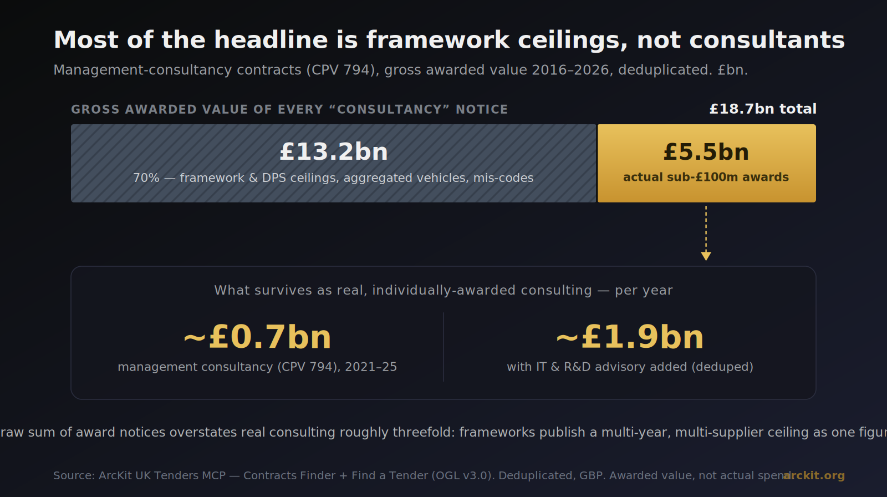
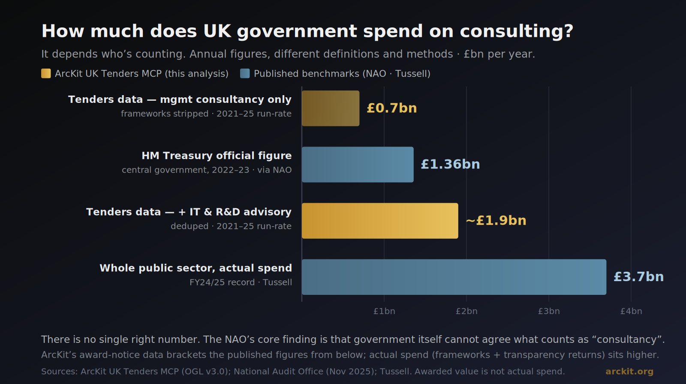
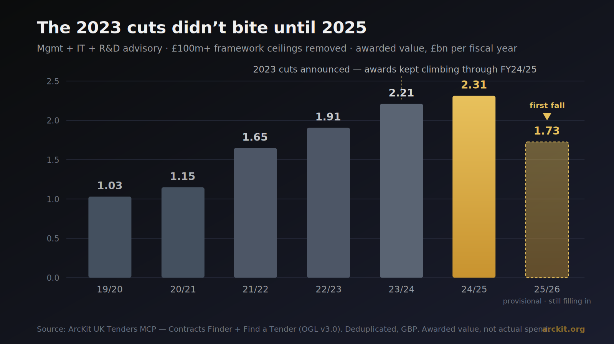

![Britain's War on Consultants hero — dark background, the small eyebrow ARCKIT ANALYSIS, the large headline Britain's War on Consultants, a gold subline reading Declared in 2023, the data shows it didn't land until 2025, and a bar chart captioned consulting awarded, £bn per year, framework ceilings stripped, rising from £1.0bn in 2019/20 through grey bars to a gold £2.3bn peak in 2024/25 and then a dashed, dimmed £1.7bn bar for 2025/26 labelled first fall 2025, with a footer reading arckit.org · UK Tenders MCP · awarded value is not actual spend](../articles/2026-06-03-uk-government-consulting-spend-hero.png)
For three years, cutting the consultancy bill has been one of the few things every Chancellor and Cabinet Office minister agrees on. The Autumn Statement of 2023 promised to slash it. The incoming government in 2024 went further, pledging to halt all non-essential consultancy and save half a billion pounds a year. The headlines wrote themselves.
So we did the obvious thing. We pointed ArcKit's new /arckit:tenders command at the public record, roughly 677,000 UK contract notices drawn from Contracts Finder, Find a Tender and the three devolved portals, and asked a simple question. How much does UK government actually spend on consulting, and did the war on consultants work?
The answer is more interesting than either side of the argument lets on. The honest number is hard to pin down, the most-quoted figure is wildly inflated, and the cuts did almost nothing for two years before biting hard in 2025.
The number everyone quotes is mostly frameworks
Start with the figure a naive query returns. Filter every UK contract notice tagged with the management-consultancy procurement code (CPV 794, the catch-all for general, financial, HR, marketing and strategy consultancy) and sum the awarded values. You get £18.7 billion across about 15,200 awards since 2016.
That number is almost useless, and it is worth understanding why, because it is exactly the kind of figure that ends up in a business case or a newspaper.

Strip out the framework ceilings and mis-codes and the headline collapses by 70 percent.
Seventy percent of that £18.7 billion, around £13.2 billion, is not consulting engagements at all. It is the published ceilings of framework agreements, dynamic purchasing systems and aggregated buying vehicles, plus a scattering of mis-coded contracts. In 2017 alone, £5.49 billion of the £5.67 billion total came from just four notices: the Crown Commercial Service's Management Consultancy Frameworks, each of which records its entire multi-year, multi-supplier capacity as a single value, and one Ministry of Defence logistics vehicle that was simply filed under the wrong code.
Strip out every award of £100 million or more, which removes those ceiling notices, and the genuine figure for individually-awarded management consultancy is £5.5 billion over a decade, or a run rate of roughly £0.7 billion a year in the most recent five years. Add IT and research advisory and the run rate rises to about £1.9 billion a year. The supplier list behind those awards reads exactly as you would expect: Deloitte wins the most contracts by a distance, followed by KPMG, EY, PA Consulting and PwC, sitting above a very long tail of one-person associate and coaching firms that pad the count but barely touch the value.
So what is the real number?
This is where most analyses go wrong. They pick one definition, quote one figure, and present it as the answer. The truth is that the answer moves by a factor of five depending on what you count and how you count it.

Four credible figures for the same thing, ranging from £0.7bn to £3.7bn a year.
Our award-notice figures sit at the bottom because they measure contracts awarded, not money paid out, and because they exclude the framework call-offs where most consulting is actually bought. The National Audit Office, reporting in November 2025, put HM Treasury's official central-government figure at about £1.36 billion for 2022-23, while warning that government "lacks a clear picture" because departments cannot agree what counts as consultancy. Tussell, which combines the same procurement data with departmental spend returns, reports whole-public-sector consulting at a record £3.7 billion in 2024-25, split roughly 58 percent central government, 17 percent local government and 15 percent NHS.
The reassuring part is that these triangulate. Our broad run rate of £1.9 billion a year lands almost exactly on Tussell's central-government management-consulting figure, which gives some confidence that the procurement data is capturing the shape of the market correctly even where it undercounts the cash. The best single answer to "what does UK government spend on consulting" is £3 to £4 billion a year across the whole public sector, of which central government is around £1.5 to £2 billion. Anyone quoting a tighter number than that is hiding a definition.
The cuts didn't bite until 2025
Now the politically interesting part. If the war on consultants started in 2023, the procurement data shows it was a phoney war for two years.

Awards kept climbing through the cost-cutting drive, then fell for the first time in 2025.
Measured by award value with the framework noise stripped out, consulting procurement rose every single year through the cost-cutting drive, from £1.65 billion in 2021-22 to a peak of £2.31 billion in 2024-25. That matches Tussell's finding that actual spend hit its record in the same year. The 2023 announcement moved the politics, not the procurement. The only early hint of restraint was in volume rather than value: the number of management-consultancy awards started easing from 2023-24, which means fewer but larger engagements.
The genuine contraction arrives in 2025-26, the first full year under the harder "halt non-essential consultancy" policy. Management-consultancy award volume falls about 26 percent, from 2,526 awards to 1,877. The framework-stripped value drops by roughly a quarter. The cleanest signal of all, the value of classic sub-£10 million engagements, roughly halves from its peak. Drill into the quarters and the inflection sits squarely in calendar 2025, not 2023.
One honest caveat, and it is the same one ArcKit stamps on every figure this data produces. Awarded value is not actual spend. A contract can be awarded at one number and drawn down at another, and framework call-offs make that gap routine. On top of that, the most recent quarters are still filling in, because award notices lag the award itself by weeks or months. So the 2025-26 figure will almost certainly revise upward as late notices arrive. Treat the direction of the fall as real and the exact size as provisional.
Why the gap between the data and the truth matters
The reason no two sources agree on this number is not incompetence. It is that "consultancy" is not a category anyone defines consistently. The same transformation programme can be coded as management consultancy, IT services, research, or filed under the department's own domain. The NAO's central finding was not that the bill is too high or too low, but that government cannot reliably say what it is. When the thing being cut cannot be measured, the savings target cannot be tracked, which is precisely the problem the NAO flagged.
This is exactly the trap a business case or a vendor evaluation falls into when it reaches for a single headline figure. Anchor an economic case to "£18.7 billion of consulting spend" and you are building on a number that is 70 percent framework ceilings. Anchor a savings claim to a figure nobody can define and you cannot prove you hit it.
That is the whole reason /arckit:tenders exists, and why every figure it produces traces back to a published notice with the framework distortion called out and the awarded-value caveat attached. The procurement record is excellent for the shape of a market, who wins, how concentrated it is, how a buyer's spending is trending. It is dangerous as a single quoted number unless you do the work of stripping the ceilings, deduplicating the sources, and reconciling against actual spend. We did that work so the figure that lands in your risk register or your Strategic Outline Business Case is one you can defend.
The war on consultants, on the evidence, was declared in 2023 and started landing in 2025. Whether it holds, or whether spend rebounds the moment the next crisis needs a delivery partner, is the question the 2026-27 data will answer. We will be watching it on the public record, with a citation on every number.
Related Articles
- Grounding Procurement Decisions in Real Award Data: New ArcKit Commands for UK Market Intelligence
- How ArcKit Is Quietly Destroying a Billion-Pound Consulting Business
- Internal Memo, Somewhere in a Big 4 Consulting Company
- I Have Saved the UK Economy £24 Billion. ArcKit Is the Third Time.
Join the ArcKit Community
- Discord — real-time conversation, help with commands, and what people are building: discord.gg/HsA4Y3hQ4
- LinkedIn Group — announcements, case studies, and longer-form discussion: linkedin.com/groups/17641034
- GitHub — code, issues, and contributions: github.com/tractorjuice/arc-kit